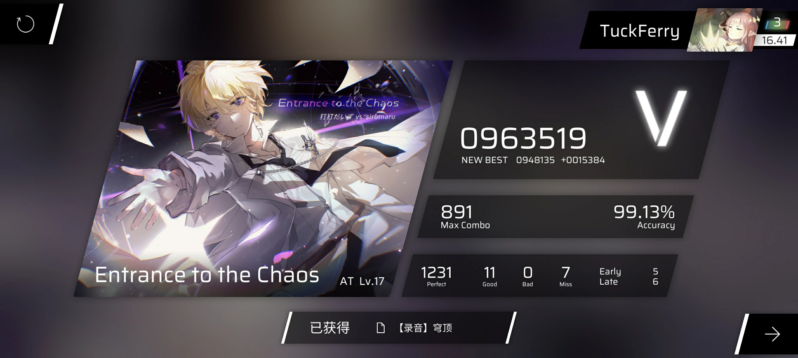
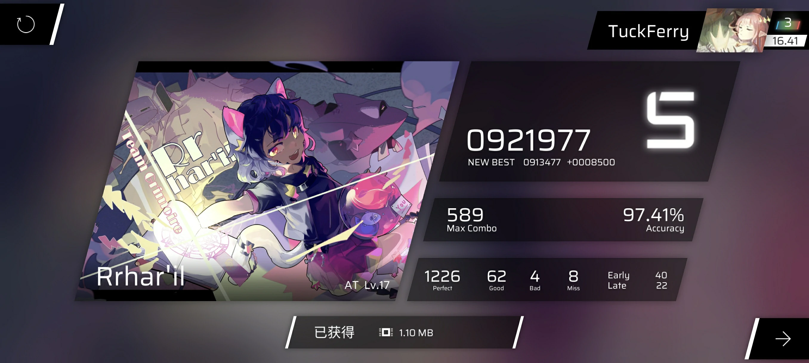
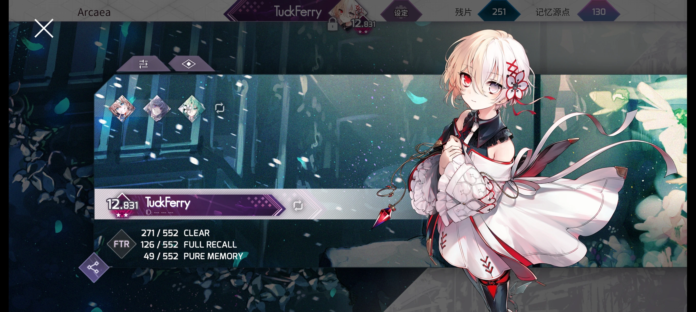
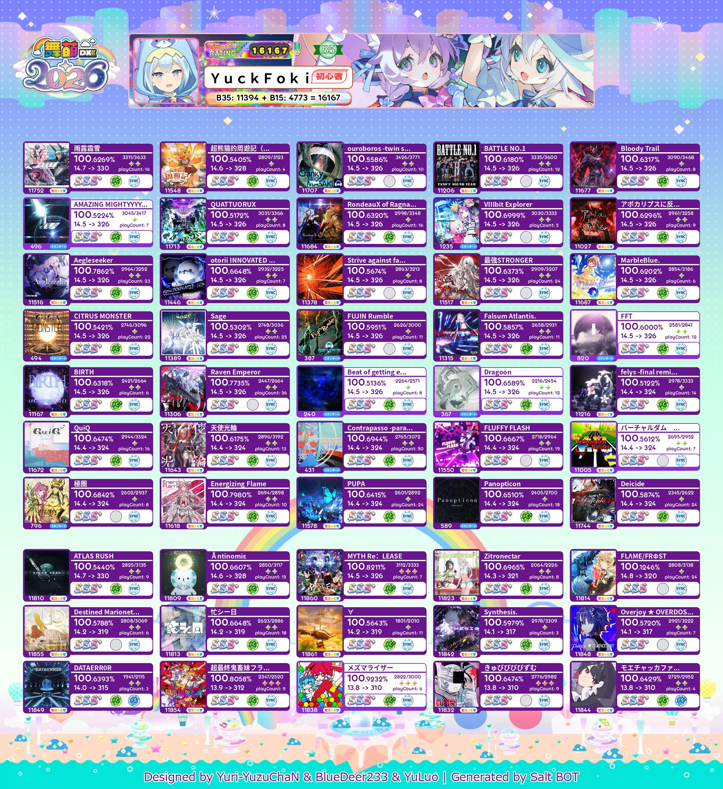
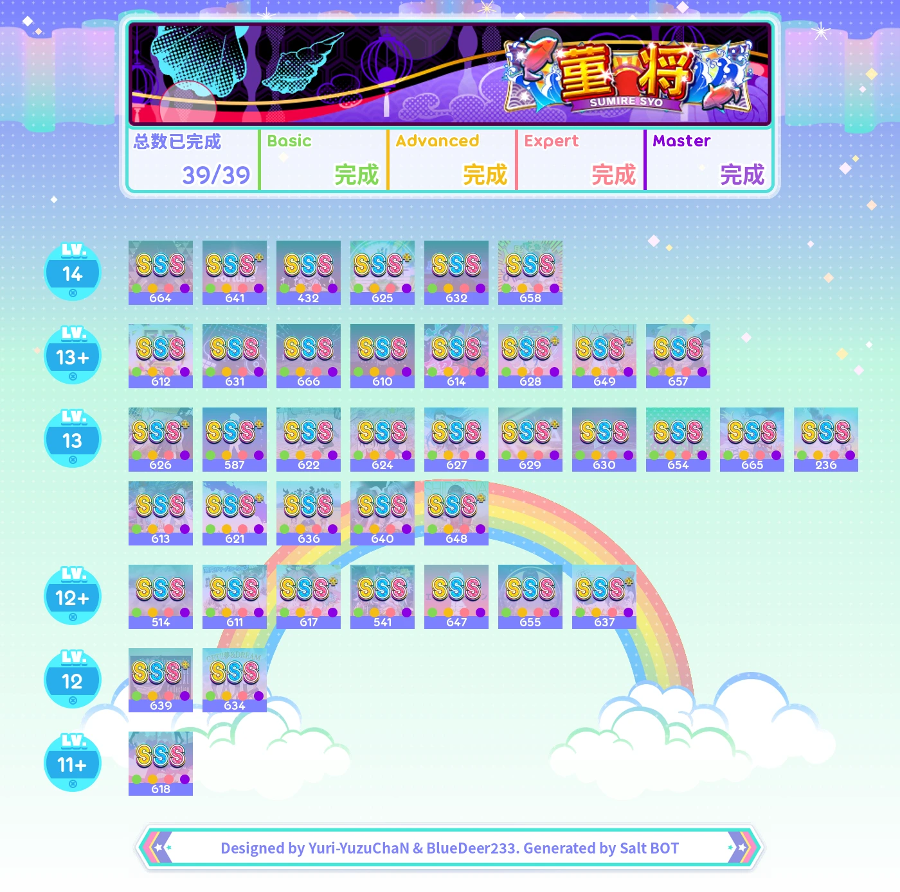
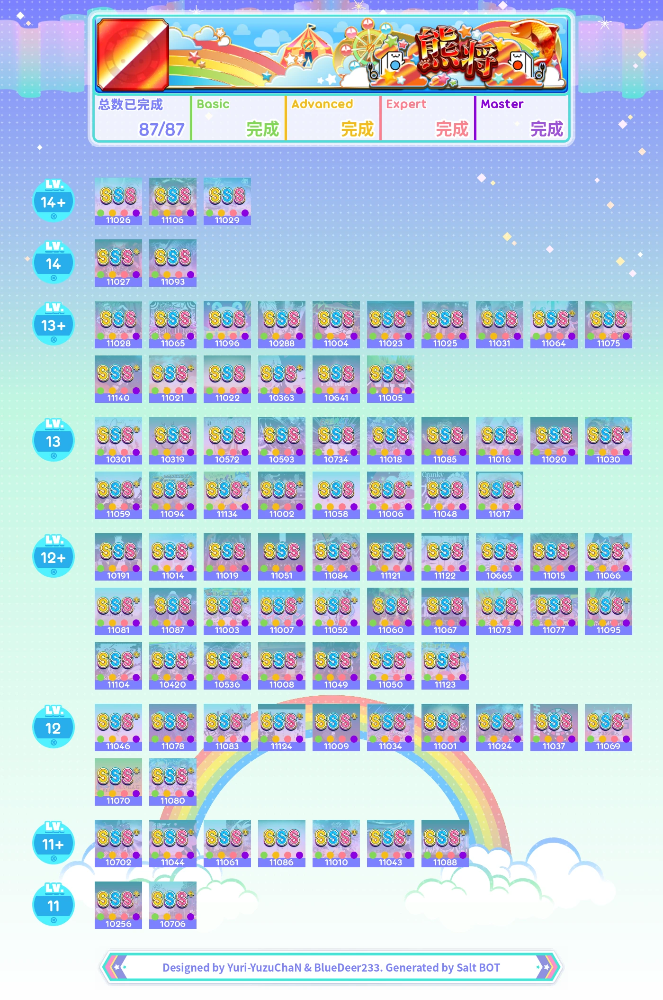
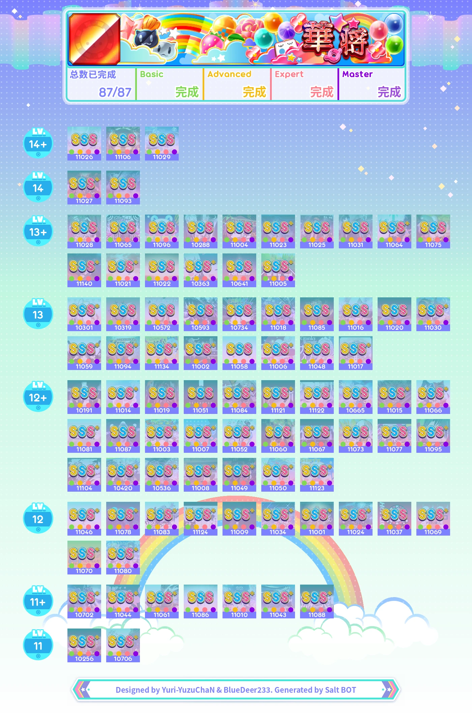
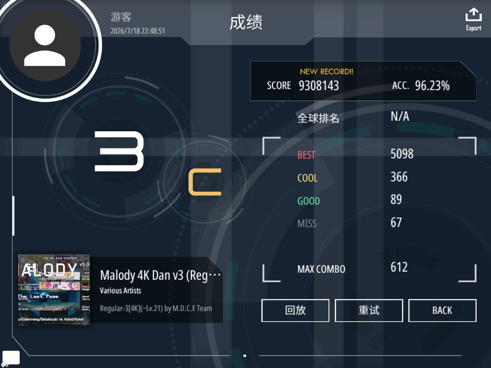

推分记录 - rks16.41
超市入口这一遍真是开智了（这么强？！
虽然我也没把它当17.6就是了（

啊啊挨踢则是打出了小时候从来没有想过的分数，也算是给萌新时期的自己一个小小的震撼吧😋

超市入口这一遍真是开智了（这么强？！
虽然我也没把它当17.6就是了（

啊啊挨踢则是打出了小时候从来没有想过的分数，也算是给萌新时期的自己一个小小的震撼吧😋







此外还玩范式起源、中二节奏、vivd/stasis和In Falsus，没啥成绩